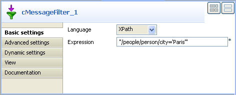
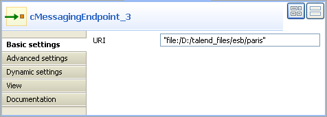
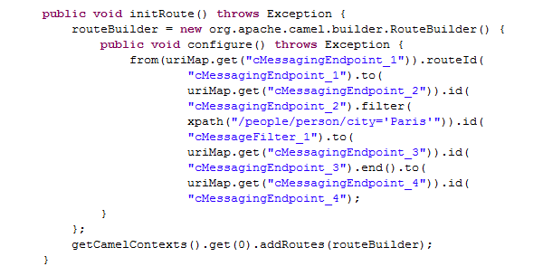

Component Family | Routing | |
Function | cMessageFilter filters the content of messages according to specified criteria and routes the filtered messages to the specified output channel. All messages that do not match the criteria will be dropped. For more information on the Camel Message Filter EIP: http://camel.apache.org/message-filter.html. | |
Purpose | Use cMessageFilter to eliminate unwanted messages from a channel according to criteria. | |
Basic settings | Language | Select the language of the expression you use to filter your messages from Constant, EL, Groovy, Header, JavaScript, JoSQL, JXPath, MVEL, None, OGNL, PHP, Property, Python, Ruby, Simple, SpEL, SQL, XPath, and XQuery. |
| Expression | Type in the expression to use to filter the messages. |
Usage | cMessageFilter is used as a middle component in a Route. | |
Limitation | n/a | |
In this use case, we filter XML messages that are sent from the sending endpoint according to a defined criteria: all XML files where the value of the city node is Paris are sent to a folder named paris.
You can reuse the Route built in the section called “Scenario 2: sending files to another message endpoint” of cMessagingEndpoint to build this new Route.
Here's an example of the XML files used:
<people> <person id="8"> <firstName>Ellen</firstName> <lastName>Ripley</lastName> <city>Washington</city> </person> </people>
 |
Open the Route built in the section called “Scenario 2: sending files to another message endpoint”.
From the Palette, expand the Routing folder, select a cMessageFilter component and drop it onto the design workspace.
Expand the Messaging folder and drop another two cMessagingEndpoint components onto the design workspace.
Right-click the second cMessagingEndpoint component, select Row > Route from the menu and drag to the cMessageFilter to link them together with a route connection.
Right-click the cMessageFilter component, select Row > Filter from the menu and drag to the third cMessagingEndpoint component. This endpoint will collect the messages that meet the defined criterion.
Right-click the cMessageFilter component, select Row > Route from the menu and drag to the last cMessagingEndpoint component. This endpoint will collect all the messages, including those meeting the filter criterion. This connection is optional.
Double-click the cMessageFilter component to display the Component view.
In the Language field, select the language of the expression you want to use to filter your messages.
As we are handling XML files, we select XPath.
In the Expression field, type in the expression according to which you want to filter your messages.
Here, we want to filter messages according the city node of the XML files and will only retrieve and send those which contain "Paris" to the next endpoint.
Double-click the third endpoint component to display the Component view, and type in the URI for the messages meeting the filter criterion in the URI field.
As we are handling files, type in "file:/" and the path to the folder to which the files will be sent, paris in this use case.
Double-click the last endpoint component to display the Component view and define the URI for the path where you want collect all the files, all in this use case.
Press Ctrl+S to save your Route.
To have a look at the generated code, click the Code tab at the bottom of the design workspace.
The code shows as in the previous use case that sends messages from one endpoint to another, but they are also filtered (
.filter) and the messages matching the filter are send to a third endpoint, while all messages are sent to the last endpoint.Click the Run view to display it and click the Run button to launch the execution of your Route.
You can also press F6 to execute it.
RESULT: The messages are filtered according to the defined criterion and the messages containing "Paris" are redirected to this new paris folder, all the messages, including those containing "Paris", are sent to the all folder.